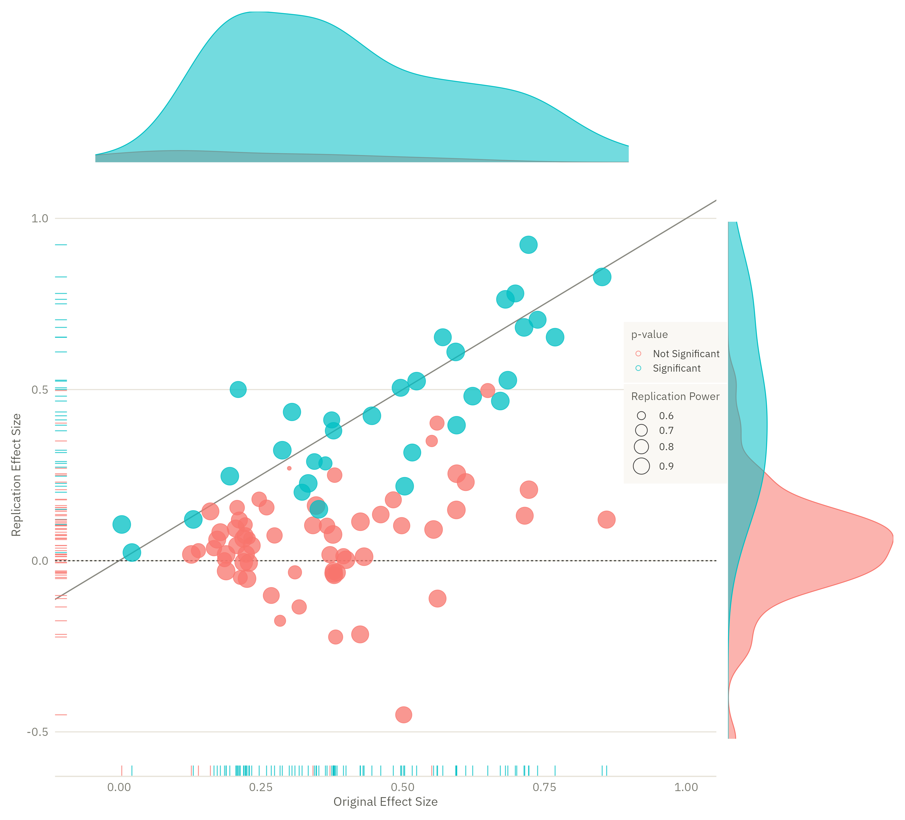

Show the R code
# The original's two colours are ggplot2's own defaults for a two-level factor
# — see the note below. Matching them is part of recreating the figure.
osc_pal <- c("Not Significant" = "#F8766D", "Significant" = "#00BFC4")
main <- ggplot(rpp, aes(orig, rep)) +
geom_abline(slope = 1, intercept = 0, colour = "#8a8a82", linewidth = .4) +
geom_hline(yintercept = 0, colour = "#3a3a34", linewidth = .35, linetype = "22") +
# rug marks on both axes, as the original has
geom_rug(aes(colour = sig_orig), sides = "b", linewidth = .3, alpha = .75,
length = unit(.018, "npc"), show.legend = FALSE) +
geom_rug(aes(colour = sig), sides = "l", linewidth = .3, alpha = .75,
length = unit(.018, "npc"), show.legend = FALSE) +
geom_point(aes(colour = sig, fill = sig, size = power), shape = 21,
stroke = .35, alpha = .75) +
scale_colour_manual(values = osc_pal, name = "p-value") +
scale_fill_manual(values = osc_pal, guide = "none") +
scale_size_continuous(name = "Replication Power", range = c(1, 5.5),
breaks = c(.6, .7, .8, .9)) +
coord_cartesian(xlim = c(-.06, 1), ylim = c(-.55, 1.05)) +
labs(x = "Original Effect Size", y = "Replication Effect Size") +
theme_dsvar(base_size = 10) +
theme(legend.position = "inside",
legend.position.inside = c(.86, .62),
legend.background = element_rect(fill = "#faf8f4", colour = NA),
legend.key.size = unit(10, "pt"),
legend.title = element_text(size = 7.5),
legend.text = element_text(size = 7),
legend.spacing.y = unit(1, "pt"))
# Marginal densities, filled and semi-transparent so the overlap shows, exactly
# as in the original.
# after_stat(count) scales each curve by its group size. Without it geom_density
# normalises every group to area 1, so the 7 non-significant originals would get
# as much ink as the 90 significant ones — which is not what the original shows,
# and is a good illustration of how a default can quietly restate the data.
top <- ggplot(rpp, aes(orig, after_stat(count), fill = sig_orig, colour = sig_orig)) +
geom_density(alpha = .55, linewidth = .3) +
scale_fill_manual(values = osc_pal, guide = "none") +
scale_colour_manual(values = osc_pal, guide = "none") +
coord_cartesian(xlim = c(-.06, 1), expand = FALSE) +
theme_void()
right <- ggplot(rpp, aes(rep, after_stat(count), fill = sig, colour = sig)) +
geom_density(alpha = .55, linewidth = .3) +
scale_fill_manual(values = osc_pal, guide = "none") +
scale_colour_manual(values = osc_pal, guide = "none") +
coord_flip(xlim = c(-.55, 1.05), expand = FALSE) +
theme_void()
# patchwork's guides="collect" is broken against ggplot2 4.x, so the legend
# lives inside the main panel and the margins are laid out by design widths.
library(patchwork)
top + plot_spacer() + main + right +
plot_layout(ncol = 2, widths = c(4, 1), heights = c(1, 4))